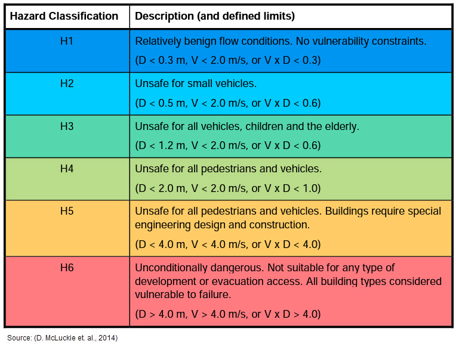
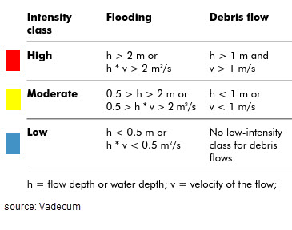
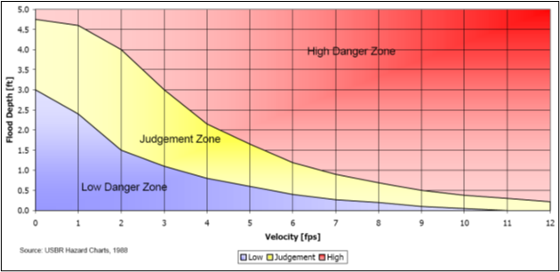
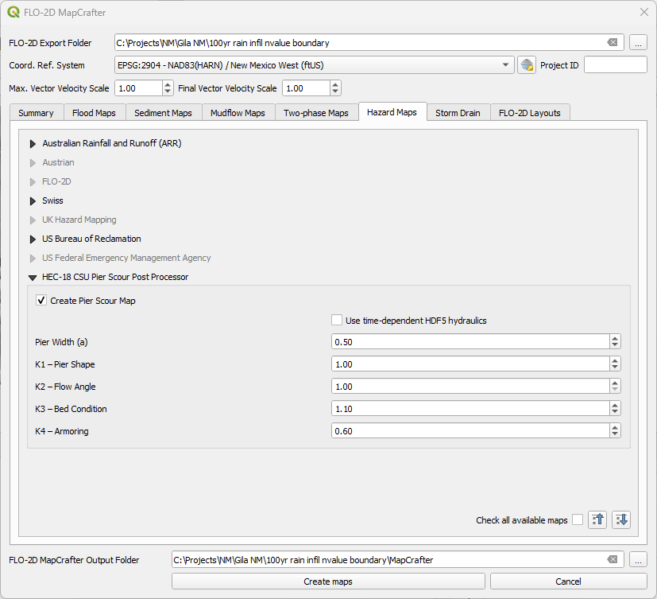
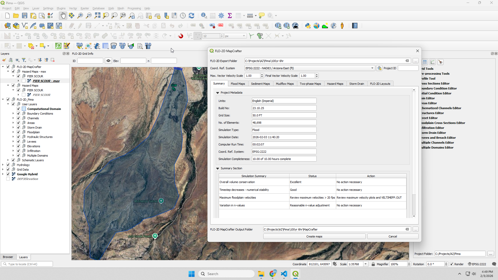
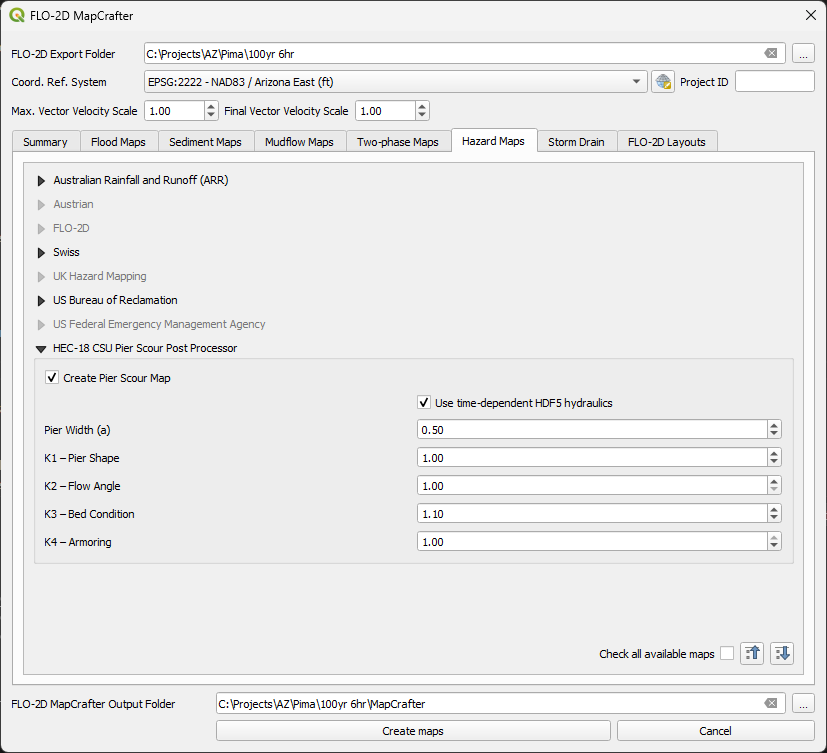
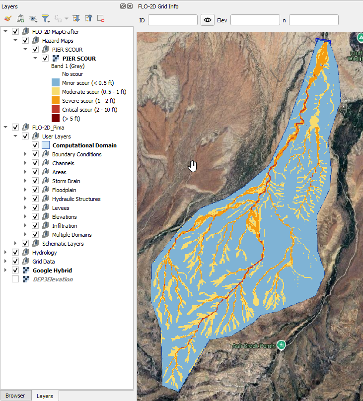

Hazard Maps
Develops hydrodynamic risk maps, highlighting areas with elevated risks based on FLO-2D simulations, aiding in risk management.
Australian Rainfall & Runoff (ARR)

This hazard map is based on the Australian Rainfall & Runoff: A Guide to Flood Estimation (2019).
Flood Hazard Map
Swiss

These hazard maps are based on Vademecum: Hazard maps and related instruments (2005).
Flood Intensity Map
Debris Intensity Map
US Bureau of Reclamation

These hazard maps are based on the Downstream Hazard Classification Guidelines (1988).
Houses Hazard Map
Mobile Home Hazard Map
Vehicle Hazard Map
Adults Hazard Map
Children Hazard Map
Pier Scour (HEC-18 CSU Method)
MapCrafter includes a pier scour mapping tool based on the Colorado State University (CSU) pier scour equation as documented in HEC-18. This method estimates local scour depth at piers using hydraulic results from FLO-2D simulations and user-defined pier geometry parameters.
FLO-2D users apply the pier scour equation to solar site models to estimate scour around solar panel pole mount or ground mount systems.
Overview
The CSU equation estimates local pier scour depth as a function of flow depth, velocity, pier geometry, alignment, and bed material effects. MapCrafter applies the equation spatially using FLO-2D depth and velocity outputs to generate scour depth maps and pier-specific results.
Hydraulic variables are extracted from raster datasets and combined with pier attributes supplied by the user.

CSU Pier Scour Equation
The local pier scour depth is computed using the HEC-18 CSU equation:
where:
\(y_s\) = local pier scour depth (ft or m)
\(y_1\) = approach flow depth (ft or m)
\(a\) = pier width normal to flow (ft or m)
\(F_r\) = Froude number of the approach flow
\(K_1\) = pier shape factor
\(K_2\) = angle of attack factor
\(K_3\) = bed condition factor
\(K_4\) = bed armoring factor
All variables are evaluated at the pier location using FLO-2D model results and user-provided pier parameters.
Froude Number
The approach flow Froude number is computed as:
where:
\(v\) = approach velocity magnitude (ft/s or m/s)
\(g\) = gravitational acceleration (32.174 ft/s/s or 9.80665 m/s/s)
\(y_1\) = approach flow depth (ft or m)
Velocity and depth are extracted from FLO-2D output rasters.
Pier Geometry and Correction Factors
Pier geometry and correction factors are supplied through the pier attribute table or MapCrafter interface.
Typical parameters include:
Pier width (ft or m)
Pier shape for \(K_1\)
Flow angle relative to pier axis for \(K_2\)
Bed condition live bed or clear water, for \(K_3\)
Armoring condition for \(K_4\)
Correction factor values follow guidance provided in HEC-18.
Pier Scour Correction Factors (HEC-18)
The CSU pier scour equation includes correction factors that account for pier geometry, flow alignment, bed condition, and armoring effects. These factors are defined in HEC-18 and are summarized below.
K₁ — Pier Nose Shape Factor
Pier Nose Shape |
K₁ |
Notes |
|---|---|---|
Square nose |
1.1 |
Blunt leading edge |
Round nose |
1.0 |
Smooth transition |
Circular cylinder |
1.0 |
Flow-symmetric |
Group of cylinders |
1.0 |
Multiple circular elements |
Sharp nose (triangular) |
0.9 |
Sharp leading edge |
K₂ — Flow Angle of Attack Factor
The flow angle correction factor accounts for the angle between the approach flow direction and the pier axis.
where:
\(\theta\) = angle of attack (degrees)
\(L\) = pier length parallel to flow
\(a\) = pier width normal to flow
Constraints:
If \(L/a > 12\), use \(L/a = 12\)
For flow angles greater than approximately 5°, \(K_1\) is typically set to 1.0
K₂ Angle-of-Attack Helper (optional)
This helper computes K₂ for the HEC-18 CSU equation. It does not perform validation or replace engineering judgement. Results are for reference only.
K₃ — Bed Condition Factor
Bed Condition |
Dune Height (H) |
K₃ |
|---|---|---|
Clear-water scour |
– |
1.1 |
Plane bed / antidune |
– |
1.1 |
For solar sites small to large dunes are not anticipated.
K₄ — Bed Armoring Factor
The armoring factor reduces predicted scour depth where coarse bed material limits erosion.
Condition |
K₄ |
Notes |
|---|---|---|
Unarmored bed |
1.0 |
Default condition |
Armored bed (minimum value) |
0.4 |
Applies when coarse material limits scour |
For solar sites, \(K_4\) is a sensitive parameter but please remember this is not open channel flow so calculating the variable from the known flume studies or mobile bed studies may result in impractical results. Use engineering judgment and test a range of values.
Notes
Correction factors follow HEC-18 guidance and are applied multiplicatively.
Factors should be reviewed carefully for site-specific conditions.
The CSU equation estimates local pier scour only and does not include contraction scour or long-term degradation.
Spatial Evaluation
Grid centroid sampling may be performed using values extracted from DEPFP.OUT and VELFP.OUT. Grid centroid values may also be sampled directly from TIMDEP.HDF5. Maximum depth and velocity values obtained from DEPFP.OUT and VELFP.OUT are not inherently time-synchronized. When relatively uniform flow conditions are anticipated, this approach provides reasonable screening-level results. Sampling from TIMDEP.HDF5 preserves time synchronization by computing the maximum depth–velocity product using time-dependent data. The resulting maximum value may be slightly lower than the true peak due to the discrete output interval used in the simulation.
Example Project
Scenario: Flood event over a potential solar site.
Model Type: FLO-2D rainfall runoff overland flow simulation.
Objective: Estimate potential pier scour depths using HEC-18 methodology.
Input Data
FLO-2D depth file
FLO-2D velocity file
FLO-2D Project QGIS
Workflow
Run FLO-2D simulation and generate depth and velocity outputs.
Load the project in QGIS and run Mapcrafter.

Find the Hazard tab and set the Pier Scour Variables.

Click Create Maps and the Pier Scour map is added to the Hazard Group.
MapCrafter computes local scour depth at each grid using the CSU equation and generates a raster mapped output. Sample this output with a pier map to get local results.
Check the pier scour map in the Layers List and expand the raster layer to show the style limis.

Limitations
The CSU equation estimates local pier scour only.
Contraction scour and long-term degradation are not included.
Results are sensitive to flow depth, velocity, and pier alignment assumptions.
Final design decisions should follow full HEC-18 guidance.
Summary
The MapCrafter pier scour tool implements the HEC-18 CSU equation directly using FLO-2D hydraulic results and user-defined pier parameters. This approach enables spatial visualization and comparative assessment of potential pier scour within a GIS-based post-processing workflow.